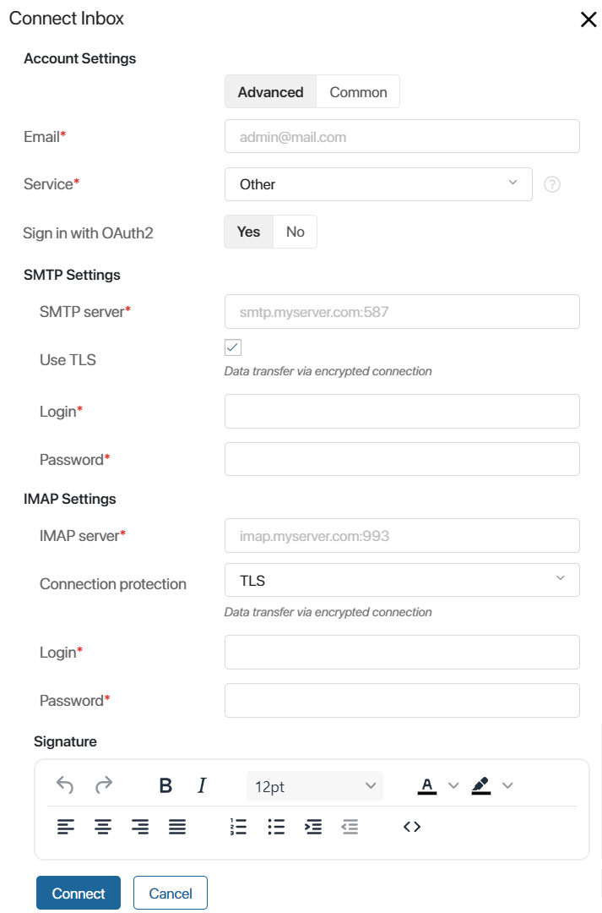
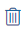

You can connect a live chat with an email account so that your email can become one of the channels you use to help your customers. Clients will write to your corporate email, and your customer support team will be able to respond to their requests right from the BRIX interface. Moreover, you will have access to the customer chat history in the system.
When you receive a new email, a new session appears in the Live Chats workspace. The email’s Subject is used as the session's name. You can also see the client’s name and email address. If the client has already written to your customer support before, the previous session reopens, and the new message is displayed within the same chat. To learn more, see Process incoming messages.
In live chats connected to emails, operators can initiate conversations with customers. Read more in Initiate a chat with an external user.
начало внимание
Only the users included in the Administrators group can integrate an email box with a live chat.
конец внимание
Connect an email
You can link one live chat with one email address. To do that, follow these steps:
- Go to Administration > Live Chats.
- Select a live chat from the list or create a new one by clicking +Live Chat in the top right corner.
- Open the Inbox tab.
- Click the Enable button in the center.
- In the window that opens, select a tab:
- Advanced. Settings allowing you to connect an email inbox using the SMTP and IMAP protocols, for example, to add an email address with a corporate domain.
- Standard. Settings to connect popular email services. On this tab, you can simply specify the Service*, Login*, and Password* to the email inbox.

1. Account settings.
- Email*. Specify the email you want to connect to the live chat.
- Service*. Select an email service from the list: Gmail, Yahoo, Outlook, or Office365.
If you are using an email with a corporate domain name, select Other and fill out the settings for connecting the SMTP and IMAP protocols.
- Sign in with OAuth2. You can use OAuth2 to connect a mailbox to the live chat. You do not need to send the email password to ELMA365 in this case. It is enough to enter the email address in the Email* and Login* fields, then specify the email service and log in to it. This ensures easy integration and additional security of your account data.
Authentication with OAuth2 is available if the company has configured a module for authentication in the email service. Read more in the Custom OAuth2 module for authentication via an external service article.
начало внимание
To enable the authentication via OAuth2 for mail connection, the system administrator needs to enable the enableLinesOauth2 feature flag. To learn more about this, see the Modify BRIX Enterprise parameters and Modify BRIX Standard parameters articles. If you are using the SaaS edition, please contact your BRIX sales rep to enable the flag.
конец внимание
2. SMTP and IMAP settings.
The SMTP and IMAP server names are formed as follows: the protocol name and the domain or email service provider separated with a period, then the port number after a colon. The connection security settings that the port number depends on are configured by the administrator who created the email.
- SMTP Settings:
- SMTP server*. Specify the protocol parameters of the outgoing mail server and the port you’re using. You can use the following ports: 25, 465, and 587. Example: smtp.myserver.com:465.
- Use TLS. Check this box if the mail service transfers data via an encrypted connection.
- Login* and Password*. Specify the login and password of the SMTP server you are connecting to. They are provided by the server administrator.
- IMAP Settings:
- IMAP server*. Specify the protocol parameters of the incoming mail server and the port you’re using. The commonly used ports are 143 and 993. Example: imap.myserver.com:993.
- Connection protection. Select the type of data encryption that the server uses. The options include No, STARTTLS, and TLS.
- Login* and Password*. Specify the login and password of the IMAP server you are connecting to. They are provided by the server administrator.
Please note that for some email services, you need to explicitly allow IMAP access to the email inbox in its settings.
Example of access settings for Gmail
To use Gmail, open the Google Account settings. Click Security in the left-hand side menu, find the How you sign in to Google section, and click 2‑Step Verification. Enable 2‑step verification, then move to the App passwords section. Enter the app name, for example, BRIX, and click Create. Use the generated password in the Connection Settings. Read more about app passwords in Google Account Help in the Sign in with app passwords article. |
3. Signature settings.
In this section, write a signature that will be added to your messages in the live chat. Customers will see it in the emails they receive. You can skip this step and change the signature later.
- Click Connect.
If you do not use OAuth2 authentication, the connection to the mail server will be made automatically based on the data entered earlier.
If you use OAuth2, select the mail service you have specified in the settings from the list. In the opened window, log in to your account using your credentials.
If the connection with the server is established successfully, the email is automatically connected to the live chat. In the live chat settings, on the Inbox tab, you will see the name and the status of the inbox you linked to this live chat.

To unbind the live chat from the inbox, click the button next to its name. The connection status will change from Active to Interrupted. You can later connect the email to the live chat again by clicking this button.
To the right of the activation button, you can see additional options:
- Click to open the Connection Settings. Here you can change the email address linked to the live chat or edit the signature used in your emails.
- Click  to delete the inbox connected to the live chat.
Found a typo? Select it and press Ctrl+Enter to send us feedback